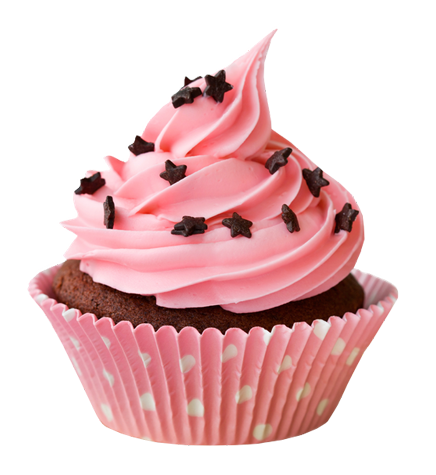
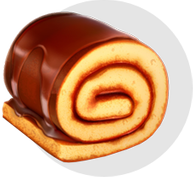
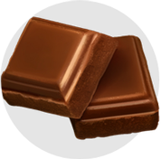

Десерт, состоящий из одного или нескольких коржей, пропитанных кремом или джемом. Сверху торт обычно украшают кремом, глазурью или фруктами.
Пирожинка
Ингредиенты
Срок хранения:
120 часов

Sweet Cupcake
В основе пирожного Sweet Cupcake выпеченный бисквит, промоченный сахарным сиропом с добавлением коньяка и десертного вина. Прослоено суфлейной массой, смешанной с апельсиновым концентратом (калоризатор). Заглазировано шоколадной глазурью с нанесением сеточки из белой шоколадной глазури
199 ¤
Почему так вкусно?
В основе пирожного Sweet Cupcake выпеченный бисквит, промоченный сахарным сиропом с добавлением коньяка и десертного вина. Прослоено суфлейной массой, смешанной с апельсиновым концентратом (колоризатор). Заглазировано шоколадной глазурью с нанесением сеточки из белой шоколадной глазури.
-
 Лучшие повара своего дела
Лучшие повара своего дела -
 Свежие ингредиенты
Свежие ингредиенты -
 Приготовлено с любовью
Приготовлено с любовью
Мы поставляем
Так же мы делаем выпечку под заказ для различных праздников и банкетов.
Заказать индивидуальную выпечку вы можете заполнив форму.
После с Вами свяжется один из наших поваров и обсудит заказ более детально.
-
Торты
-
 Печенье
ПеченьеДесерт, состоящий из одного или нескольких коржей, пропитанных кремом или джемом. Сверху торт обычно украшают кремом, глазурью или фруктами.
-
 Пончики
ПончикиДесерт, состоящий из одного или нескольких коржей, пропитанных кремом или джемом. Сверху торт обычно украшают кремом, глазурью или фруктами.
-
Рулеты
Десерт, состоящий из одного или нескольких коржей, пропитанных кремом или джемом. Сверху торт обычно украшают кремом, глазурью или фруктами.
-
 Зефир
ЗефирДесерт, состоящий из одного или нескольких коржей, пропитанных кремом или джемом. Сверху торт обычно украшают кремом, глазурью или фруктами.
-
Шоколад
Десерт, состоящий из одного или нескольких коржей, пропитанных кремом или джемом. Сверху торт обычно украшают кремом, глазурью или фруктами.
-
 Пирожные
ПирожныеДесерт, состоящий из одного или нескольких коржей, пропитанных кремом или джемом. Сверху торт обычно украшают кремом, глазурью или фруктами.
-
Конфеты
Десерт, состоящий из одного или нескольких коржей, пропитанных кремом или джемом. Сверху торт обычно украшают кремом, глазурью или фруктами.
Часто задаваемые вопросы
-
1. Сколько по времени курьер доставляет заказ ?
В античное время и средние века курьерами называли посыльных, конных гонцов, доставлявших секретную и дипломатическую почту. "аковой", например, была введенная в Римской империи Августом государственная курьерская служба, называющаяся cursus publicus.
В допетровской России рассыльные (гонцы) были служилыми людьми, "по прибору" и содержались за счет государственной казны. Особая курьерская почтовая служба была основана в 1701 году Петром I на Смоленском и Архангельском трактах для доставки чрезвычайных скорых посылок с царскими грамотами. Военных посыльных называют фельдъегерями, (начиная с середины XVIII века), а доставляющих дипломатическую почту - дипкурьерами.
-
2. Если курьер опоздал, будут ли какие то бонусы?
В античное время и средние века курьерами называли посыльных, конных гонцов, доставлявших секретную и дипломатическую почту. "аковой", например, была введенная в Римской империи Августом государственная курьерская служба, называющаяся cursus publicus.
В допетровской России рассыльные (гонцы) были служилыми людьми, "по прибору" и содержались за счет государственной казны. Особая курьерская почтовая служба была основана в 1701 году Петром I на Смоленском и Архангельском трактах для доставки чрезвычайных скорых посылок с царскими грамотами. Военных посыльных называют фельдъегерями, (начиная с середины XVIII века), а доставляющих дипломатическую почту - дипкурьерами.
-
3. Добавляйте ли вы какие либо консерванты в вашу продукцию ?
В античное время и средние века курьерами называли посыльных, конных гонцов, доставлявших секретную и дипломатическую почту. "аковой", например, была введенная в Римской империи Августом государственная курьерская служба, называющаяся cursus publicus.
В допетровской России рассыльные (гонцы) были служилыми людьми, "по прибору" и содержались за счет государственной казны. Особая курьерская почтовая служба была основана в 1701 году Петром I на Смоленском и Архангельском трактах для доставки чрезвычайных скорых посылок с царскими грамотами. Военных посыльных называют фельдъегерями, (начиная с середины XVIII века), а доставляющих дипломатическую почту - дипкурьерами.
-
4. Как долго готовиться у вас индивидуальный торт ?
В античное время и средние века курьерами называли посыльных, конных гонцов, доставлявших секретную и дипломатическую почту. "аковой", например, была введенная в Римской империи Августом государственная курьерская служба, называющаяся cursus publicus.
В допетровской России рассыльные (гонцы) были служилыми людьми, "по прибору" и содержались за счет государственной казны. Особая курьерская почтовая служба была основана в 1701 году Петром I на Смоленском и Архангельском трактах для доставки чрезвычайных скорых посылок с царскими грамотами. Военных посыльных называют фельдъегерями, (начиная с середины XVIII века), а доставляющих дипломатическую почту - дипкурьерами.